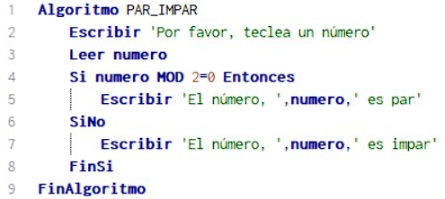

Conecta la manera en que los diferentes elementos del sistema interactúan y comunican entre sí, ya sea en el diseño de algoritmos o la estructuración de sistemas complejos.
A continuación encontrarás las definiciones de palabras y expresiones relacionadas con la asignatura de Pensamiento Algortimico
Interfaz
Pseudocodigo
Es una representación de un algoritmo en un formato que simula el lenguaje de programación, pero sin ceñirse a la sintaxis específica de ningún lenguaje de programación en particular.
Nemotécnico
Son técnicas o métodos diseñados para ayudar a recordar información de manera más fácil y efectiva. Se basan en la idea de transformar la información que necesitas memorizar en un formato más accesible y memorable.
Variable
Es un espacio de almacenamiento en la memoria que tiene un nombre asociado y que se utiliza para guardar datos que pueden cambiar durante la ejecución de un programa o en diferentes instancias.
Identificadores
un identificador es un nombre que se utiliza para identificar variables, funciones, clases, objetos, y otros elementos en el código. Los identificadores permiten a los programadores referirse a estos elementos de manera legible y manejable.
Concatenar
Se refiere al proceso de unir o enlazar elementos de manera secuencial, de tal forma que formen una cadena continua.
Compilar
Es convertir el código legible para humanos en algo que la computadora lo pueda entender y ejecutar y se realiza por medio de un programa llamado compilador.